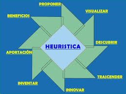

Las heurísticas matemáticas son estrategias prácticas que ayudan a resolver problemas matemáticos de manera efectiva. Estas técnicas no garantizan una solución óptima, pero son útiles para encontrar respuestas rápidamente.
imagenes
Las heurísticas matemáticas son herramientas valiosas para abordar problemas complejos. Al utilizarlas, podemos simplificar y acelerar el proceso de resolución.